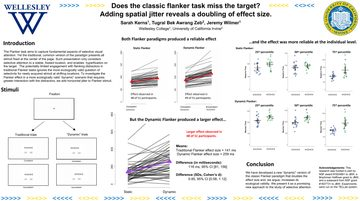

Do classic tasks measure what we think they measure? My work in this area, with ISWYM and TestMyBrain.org, examines construct validity in classic psychophysics tasks. My redesign of the flanker task offered a doubling of effect size and increased reliability. This work was presented at the Vision Sciences Society (VSS) in 2022, and large-scale online studies of the dynamic flanker task followed, beginning in 2022.

Psychophysics
ISWYM (I See What You Mean) Lab
Flanker · Construct validity
Published work
Presentations
- Poster
Kerns, S., Awrang Zeb, T. B., & Wilmer, J. (2022). Does the classic flanker task miss the target? Adding spatial jitter reveals a doubling of effect size. Poster, VSS 2022. Journal of Vision, 22(14), 4453. https://doi.org/10.1167/jov.22.14.4453

In preparation
- In preparation
Kerns, S. H., Awrang Zeb, T. B., Mulligan, J., & Wilmer, J. B. (in preparation). Displaced reliability: How flanker reliability was lost and then found. Manuscript in preparation.